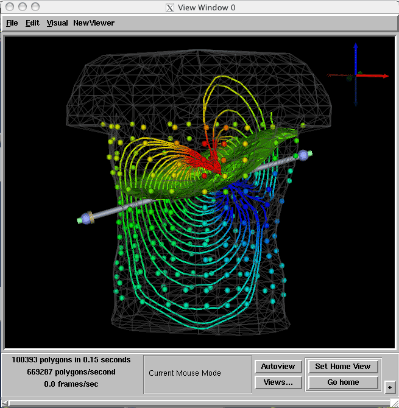

Chapter 6: Putting Simulation and Visualization TogetherChapter SectionsChapter OverviewChapters 1-4 demonstrated the construction of a set of visualization networks to explore scalar and vector fields. In the previous chapter, a network to solve a bioelectric finite element problem was implemented. The output of that network was a solution vector,This chapter will reuse the finite element simulation network from Chapter 5, as well as the visualization network from Chapter 4. The only missing piece is a module that connects the solution vector of scalar values to the nodes of the tetrahedral finite element mesh. The ManageFieldData module accomplishes this task. It is described in the sections that follow. ManageFieldDataThe ManageFieldData module performs two simultaneous operations. First, the module splits the input Field into its mesh part and data values. The data values are passed out through the output matrix port. Second, the module combines the mesh part with the matrix input, creating a new Field output.There are a few rules for the behavior of the module that increase its versatility and its complexity:
Combines Simulation and VisualizationUse the File->Insert option to combine the finite element simulation net from Chapter 5, Figure 5.2, with the visualization net from Chapter 4, Figure 4.2. Add a ManageFieldData module between them, and you should have a net that looks similar to Figure 6.1 (Notice that in figure 6.1 the modules have been placed in more of a horizontal layout then in Figure 4.2.) Note also that all of the modules from the Chapter 4 net that were connected to the left FieldReader module, are now connected to the ManageFieldData module.
After executing the network, the image in the ViewWindow should look similar to Figure 6.2. (Remember to press the Autoview button to center the dataset in the view window.)
 SummaryThis chapter demonstrated how to combine two existing networks, reusing the finite element simulation network from Chapter 5, and the visualization network from Chapter 4. The ManageFieldData module was used to connect the solution vector of scalar values to the nodes of the tetrahedral finite element mesh.Chapter 7 will illustrate how to add a feedback module and interactively visualize the results. |